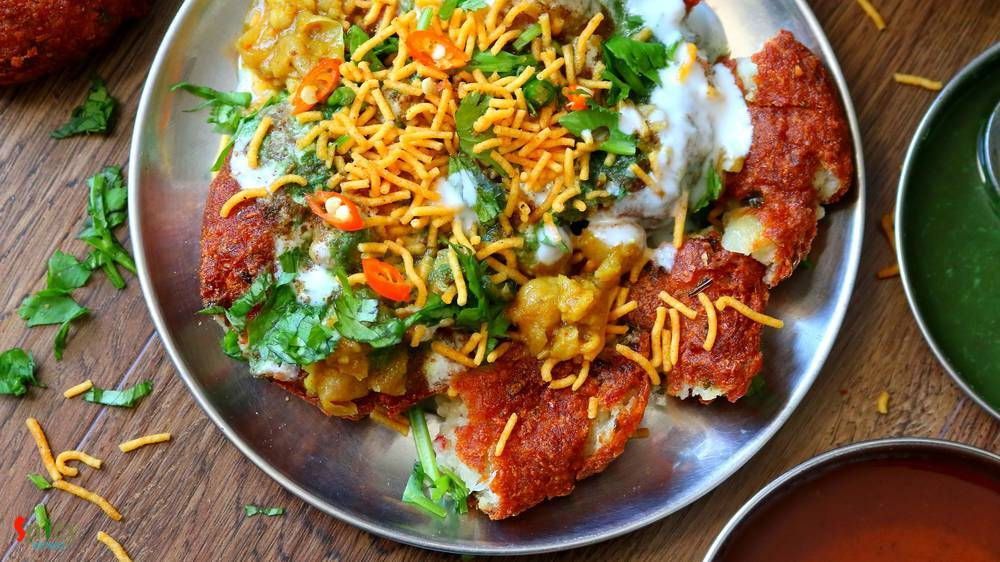
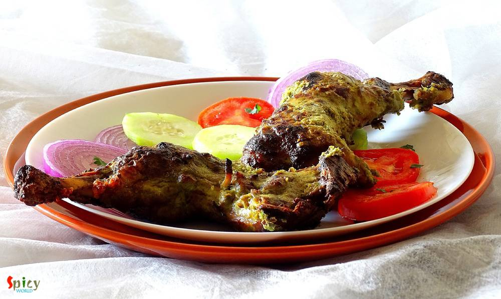

Simple and Easy Recipes
Posts on 'street food'

Veg Recipe
Jul 9, 2019
Aloo tikki means Potato cutlets. Aloo tikki chaat is a mouth watering snack from North Indian cuisine. Main trick about this recipe is to make crispy and crunchy tikkis. If they become soggy, the chaat will not come out that tasty. Usually these tikkis are served with Chana masala (chickpea curry), Yogurt, Tamarind chutney, Green chutney and Sev. Do give this recipe a try and let me know how it tu ...

")
Nonveg Recipe
Feb 27, 2019
If you are a fish lover, then 'fish fingers' should be on the top of your list. These crispy, spicy fingers can steal your heart in one bite. In Kolkata, every street food center, college canteens, restaurants sell these lip smacking Fish Fingers with chili sauce or Kasundi. You can use any kind of white fish fillet in this recipe. Oh boy, the taste is unbeatable and unforgettable !! There are no ...
")
Nonveg Recipe
Aug 21, 2019
If you have any Bengali friend in your gang then I guess you already know that he / she has a thing for fish, football and rabindra sangeet. We eat fish in many forms like thick curry (kaliya), thin curry (jhol), batter fried, shallow fried (mach vaja), steamed version (vapa) and so on. One of the popular among them is 'fried fish'. Now in this category also we have so many variations. The most si ...

Nonveg Recipe
Feb 7, 2019
One of the popular Tibetian delicacy is Momo. They are very similar to dumplings and now a well known street food across India. You will get so many varieties from modern MOMO shops like 'MOMO I AM', 'WOW MOMO' etc. Steamed chicken momos are healthy and tastes more delicious with hot & spicy red chutney. Thin wrapper made out of flour will be filled with tasty ground chicken filling, and then they ...

Nonveg Recipe
Jan 1, 2019
In Bengal, one of the famous street food is 'dimer devil'. Dim means Egg in Bengal. Nowadays, 'egg chop' is also served in many party, get to gather and occasions. To make this you have to wrap a boiled egg with spicy potato filling, roll them in bread crumbs and then deep fry them. In college canteen or any ceremony, sometimes the cook mix some minced mutton (keema) with the spicy potato, the tas ...

Nonveg Recipe
Mar 7, 2019
A super spicy and fiery indo-chinese starter is 'Chicken 65'. In southern part of India, few restaurants first started selling this Chicken 65 as a quick snack and now, people from all around the world knows about Chicken 65. In USA, we get delicious Chicken 65 from Indian restaurants, it is one of our favorite appetizer and that is why I made my mind to make this dish in my kitchen. You can make ...
")
Nonveg Recipe
Dec 14, 2018
I am a very fast food loving person. During college life there was hardly any day I skipped fast food. Be it simple 'phuchka' (panipuri) or heaviest roll, I was always in ! Surprisingly after my marriage I have taken a lot of control over my food habit, I have become more conscious now. But that doesn't mean I can't eat fast food once in a week .. hell I can ! ?? When I made these yummy 'egg chi ...

Veg Recipe
Nov 12, 2018
Doi Fuchka or Dahi Puri Chaat is one delicious and popular variety from Chaat Gharana. You can get several types of chaat in India from street vendors. They all are very very tasty. In Kolkata, one of the famous chaat is 'doi fuchka'. The hollow chips are filled with spicy potato filling, thick sweet and sour yogurt mixture, sweet tamarind chutney along with lots of fresh coriander leaves and few ...

Veg Recipe
Nov 4, 2018
Paneer Pakoras are delicious crispy vegetarian appetizer which can be served with mint or tamarind chutney and a cup of strong tea. I cut the paneer cubes from the center and filled it with green chutney as paneer has a bland taste. The recipe is very simple and easy. Your kids will love these Paneer Pakoras. Enjoy the recipe with detailed video.

Veg Recipe
Oct 24, 2018
Hara Bhara Kabab is a delicious snack item for all the veggie lovers. Hara means green color. The kabab contains potato, spinach and any type of green colored vegetables like capsicums, beans and peas. Though I have only used spinach today but feel free to add other vegetables also. Like usual Kabab, it is not grilled but fried version. I kept the recipe as simple as possible. Just give it a try a ...

Veg Recipe
Sep 25, 2018
Paneer Kathi Roll is loved by both vegetarian and non vegetarian people all across India. Paneer Frankie or roll is nothing but stuffed wrap, cooked paneer cubes with some onion slices and green chutney will be stuffed inside a cooked flour paratha. It will be easy for you if you divide the recipe in 3 parts - making stuffing, making paratha, assembling the rolls. You can serve this as evening sna ...
Nonveg Recipe
Feb 7, 2019
One of the popular Nepalese delicacy is Momo. They are very similar to dumplings. Chicken momos are healthy and tastes more delicious with hot & spicy chutney. Thin wrapper made out of flour will be filled with tasty ground chicken filling, and then they will be steamed to perfection. You can enjoy them as brunch or snacks.
")
Nonveg Recipe
May 31, 2019
Fish fry or Bhetki fry is a very famous street food of West Bengal. Bhetki (or any white fish) will be first marinated in a green paste then they will get a coating of breadcrumbs and before serving will be fried until golden. There is a fast food center in Chandannagar, named 'robi fast food center', to me he is the best fish fry maker. As my school was in Chandannagar, so I know more shops of th ...

Nonveg Recipe
Jun 14, 2018
This easy noodles recipe is sure to make your lunch / dinner much better. With egg and veggies the noodles become more addictive and best option for lunch boxes. It used to be my frequent tiffin during school life. You can also add chicken and shrimp to this dish. I have 'Mix Noodles' recipe already in my blog. Do try this delicious recipe in your kitchen and let me know how it turned out for you.

Nonveg Recipe
May 24, 2018
I am one true lover of rolls, be it an Egg roll or Chicken roll. I know many of you do also. But fact is it's always better to have home cooked food than consuming street food, here everyone has one common complain about that - taste is not the same yaar ! right ? Being a crazy fast food lover I can guarantee you that this is one top notch recipe of Butter Chicken Roll. I've combined two best idea ...

Nonveg Recipe
Apr 12, 2016
I always find immense pleasure in cooking deep fried dishes, I know they are not always healthy to eat, but then, who is watching ? I made this 'fish pokora' last month and simply forgot to post. It is close to 'amritsari fish fry' but I didn't use lots of spices, that's why they are just 'fish pakora'. You can enjoy this with chilli sauce / chutney / coke / beer. Everytime they will taste scrumpt ...

Veg Recipe
Aug 31, 2016
Durga puja is just a few days away. Every street of Bengal and other parts of India will be filled with people and food stalls. Among all of them 'chaat' stalls are my favourite. I like various type of chaats like panipuri, dahi puri chat, papri chat, samosa chat, nimki chat, batata puri chat, ghugni chat and so on. Though today I am not sharing any Bengali chaat, but 'pav bhaji' is quite famous i ...

Nonveg Recipe
Aug 16, 2016
Yesterday I experienced the worst ... my camera's memory card got corrupted and I lost more than half pictures of this recipe. We tried very hard to recover those photos but no luck!! It was nobody's fault, it's just that the tiny little piece of 'card' betrayed me ??? very harshly .. and I felt tremendously helpless towards 'technology'. Now you guys know why there is no step by step pictures ...
 / চিকেন কাটলেট")
Nonveg Recipe
Apr 20, 2016
'Chop - Cutlet' shops are very much available in Kolkata. You will surely find one or two shop in every street. You know how much I love fried stuff, but this one sits on top of my favourite list. 'Cutlet' means breadcrumb coated fried flat croquette. Generally in India we eat this type of fast food from street shop. After my marriage my mom twice made these chicken cutlets at home. They were scru ...

Veg Recipe
Jun 17, 2016
Most probably I am the only blogger who have taken so long to post about her own regional recipe of 'phuchka'. Because almost every blogger has their own regional recipe of 'panipuri / golgappa'. But it's better late than never. In Kolkata I never eat 'phuchka' with sweet chutney, always with tangy tamarind water ? and believe me there is no fun of having them sweet, the taste has to be spicy and ...
")
Nonveg Recipe
Jun 14, 2016
Who doesn't crave for yummy snacks in the evening with some cold drinks during summer ?? I guess everybody does. Summer or winter doesn't matter ... weekend evenings are meant for some awesome starters ! After few trials I finally created the exact taste of Kolkata's one of the famous street food - 'kobiraji cutlet'. Kobiraji means coverage or lace like texture, which you can create with beaten eg ...

Nonveg Recipe
May 3, 2016
Few months back I saw a recipe of this 'dhaniya murgh kabab' with boneless chicken in facebook. The picture caught my eyes and then I made my mind to give it a try. But I actually got time to make it last weekend as I already had so many recipes in my drafts and to-do list. There were few changes I make with the recipe and we both got very much impressed by it's result. Smokey flavour of any type ...

Nonveg Recipe
Apr 15, 2016
What can I say about this one? Because again its Kabab!! This malai kabab has very smooth texture and smokey flavour. 'Malai' means cream, usually chicken cubes are marinated with yogurt, cheese, cream and some spices, I also did the same. You will be lost whenever you put that juicy, tendor piece of chicken in your mouth. I am damn sure that these kababs will make your appetite satisfy. Enjoy the ...

Nonveg Recipe
Mar 28, 2016
Obviously they are not our regular 'aloor chop' / aloo tikki, they are something very special, aloo tikkis are stuffed with spicy minced meat, a little different from usual, but they tastes million bucks !! We Bengalis generally eat 'aloor chop' with puffed rice or tea whereas in other parts of India 'aloo tikki' is always served with chutneys. I will recommend you the second one for these stuffed ...

Nonveg Recipe
Jan 21, 2016
Almost every one has a slight weakness over chinese food. Taste and flavour of their food is totally unique. In Kolkata, many street food joints sell chinese food like various types of chowmin, chilli chicken, manchurian, lollipops etc. They all tastes really good. Today I am sharing the delicious recipe of 'mix Hakka noodles'. The dish has lots of vegetables, chicken and also egg, that's why the ...

Nonveg Recipe
Sep 16, 2015
In India we make chinese food with some own variations, that's why we call it 'indo-chinese'. Egg chicken chowmin is very famous street food from kolkata. You can also get veg chowmin, prawn chowmin, only chicken chowmin etc. But my favourite is this one. Try this at your home, you will get the exact taste of street food.